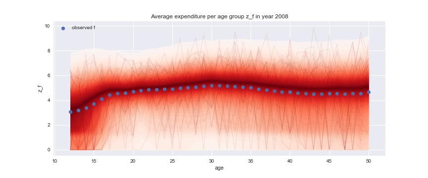
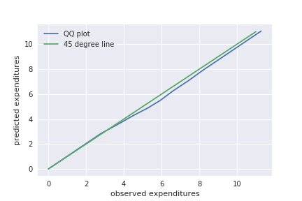
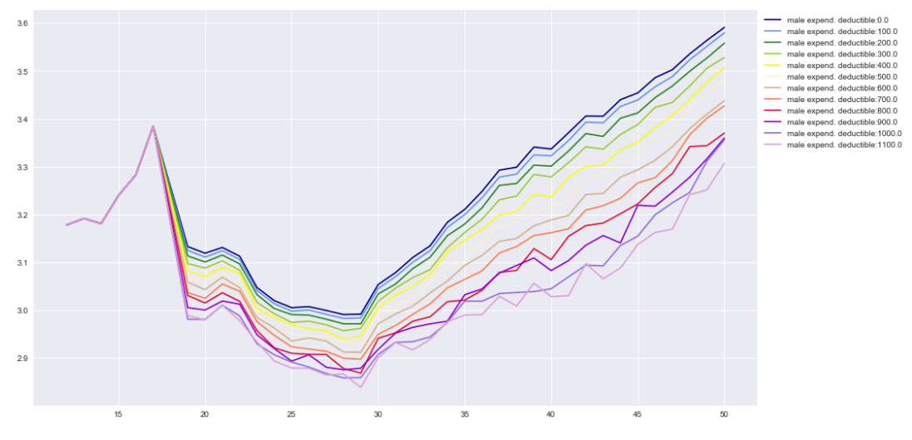
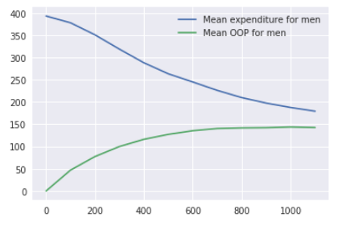
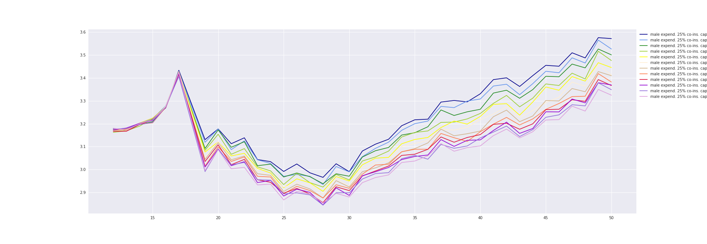
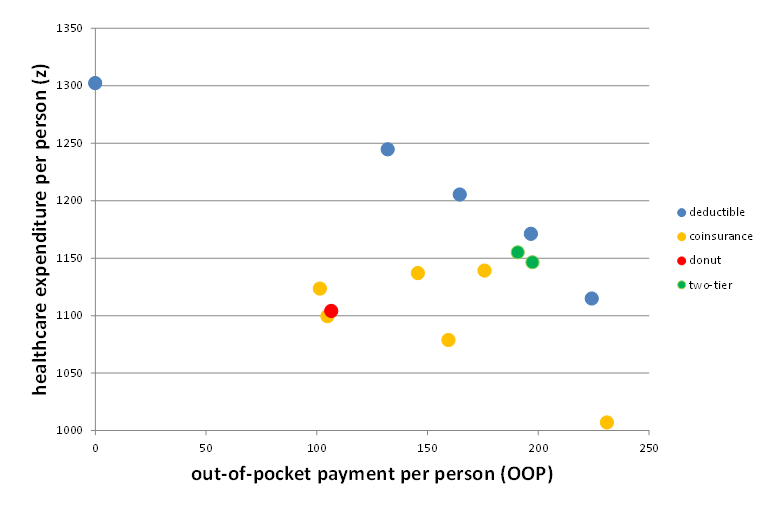

A Model for Cost-Sharing in Healthcare
Jan Boone, Minke Remmerswaal, and Bram Wouterse
Table of Contents
Introduction
Introduction
- project together with Dutch policy institute CPB
- politicians suggest different demand cost sharing schemes in health insurance
- what are the effects on health care expenditures, out-of-pocket payments (OOP)
- objective:
- calculate effects of different cost-sharing schemes on healthcare spending
- deductible, coinsurance, "donut"
- difficulties:
- after the reform in 2006, the Netherlands has only featured deductible (and rebate)
- how can we generalize to other schemes?
Background
- Since 2006, Dutch health insurance
- features mandatory deductible for anyone 18 or older
- no deductible for people under 18
- mandatory basic insurance
- option to have:
- extra voluntary deductible (ignored here)
- complementary insurance (ignored)
- in our data 2008-2013, mandatory deductible levels:
- 150, 155, 165, 170, 220, 350 euros per year
- in 2019: 385 euros
Why Bayesian?
- We use a Bayesian approach
- distributions of healthcare spending are important for cost-sharing schemes
- fraction of people affected by an increase in the deductible from 150 euros to 350 euros varies by age and gender
- Bayesian approach works directly with distributions
Variation in health care expenditures

Model
Total healthcare expenditure in a year
- Following Einav et al. (2013), we think of health care expenditure as the sum of an exogenous and endogenous part
- \(H(z)\): distribution of healthcare expenditure in a year
- where \(z=x+y\)
- \(x\): exogenous, not affected by cost-sharing, high-value care
- if you break your leg, you get "plastered up"
- \(y\): endogenous, affected by cost-sharing
- if you have a running injury, perhaps you skip the physiotherapy
Idea of the model
- your cost distribution determines how much you are affected by a change in deductible
- we identify the distribution at age-gender categories
- "literal interpretation" of the model:
- at the start of the year, before \(x\) has materialized
- person \(i\) is offered one \(y\) treatment with value \(v_y\) and expected out-of-pocket cost \(OOP\)
- \(i\) accepts the treatment if \(v_y\) exceeds expected \(OOP\)
- \(OOP\) depends on:
- \(f(x)\) ex-ante distribution of exogenous healthcare expenditure
- \(g(y)\) cost distribution of offered treatment \(y\)
- cost-sharing scheme
- for a deductible \(D\), \(OOP\) equals \(\int_0^{+\infty} \int_0^{+\infty} (\min\{x+y,D\}-\min\{x,D\})f(x)g(y)dxdy\)
Estimation
Parametric specification
- "everybody knows" that healthcare expenditures are log-normally distributed:
- log transformation of positive healthcare costs are normally distributed
- we model explicitly the propability of zero healthcare costs
- benefits of log-normal distribution:
- analytical expression for \(OOP\) with deductible (estimation)
- analytical expression for distribution of \(x+y\)
Example

Figure 2: Illustrative distributions for positive healthcare costs (left in levels, right in logs)
Four components
- define categories by age and gender (current model: \(91*2\))
- each category has a distribution of (log) healthcare costs \(z\)
- distribution \(z\) is mixture of 4 components:
- \(x \sim N(\mu_x,\sigma_x)\), with age and year FE by gender (Gaussian Process with squared exponential covariance function)
- similarly for \(y\)
- \(\psi\) is probability \(x\) treatment is offered (\(x > 0\)), with age FE by gender (and year FE women 21+)
- \(\phi\) similarly for \(y > 0\)
- people in each category know their \(\psi,\phi\) and their distributions of \(x,y\)
- calculate \(OOP_y\) per age, gender, year with \(x,y,\psi,D\)
- compute probability \(F\) that \(y\) is rejected (\(v_y < OOP\))
- where \(v_y\) is normally distributed (by age and gender)
Probabilities
- calculate probability for each mixture component
| component | probability |
|---|---|
| \(x=y=0\) | \((1-\psi)(1-\phi + \phi F)\) |
| \(x>0=y\) | \(\psi*(1-\phi + \phi F)\) |
| \(y>0=x\) | \((1-\psi)\phi(1-F)\) |
| \(x,y>0\) | \(\psi \phi (1-F)\) |
Technique
- specify priors for parameters:
- 9,000,000 observations per year
- on average 50,000 observations per category per year
- estimation with variational inference (ADVI, Auto-diff Variational Inference) and minibatches
- standard Markov Chain Monte Carlo methods (Metropolis, NUTS etc.) do not scale well with data size
- python and pymc3 fun to work with
- python allows for readable syntax and code
- for each age-gender category, we draw 10,000 samples of the model parameters (posterior)
- for each sample we draw one \(x,y\) and \(z\)
Fit
How to measure fit
- not obvious how to measure the fit of the model
- we can e.g. compare:
- average expenditure per age-gender category (fit vs observed)
- distributions via QQ plots
Fit on average costs by age, year and sex
Left panel: women, right panel: men
We can show uncertainty

QQ plot for 30 year old woman in 2013

Illustrating simulations
Deductible (men)

X-axis: age, Y-axis: log expenditure
Deductible (men)

X-axis: deductible size, Y-axis: log expenditure
25% co-insurance rate with cap (men)

X-axis: age, Y-axis: log expenditure
Policy implications
- with the fitted model, we generate distributions for \(x,y\) and \(z\)
- therefore, we can simulate the effect of different cost sharing schemes
- not only different deductible levels
- because we draw posterior samples, we can see the uncertainty at any stage in the process
- e.g. we can say: the probability that \(D = 500\) reduces expenditures by at least 10% compared to \(D=250\) equals 0.6
- we can present policy makers with a graph like:
Policy graph
